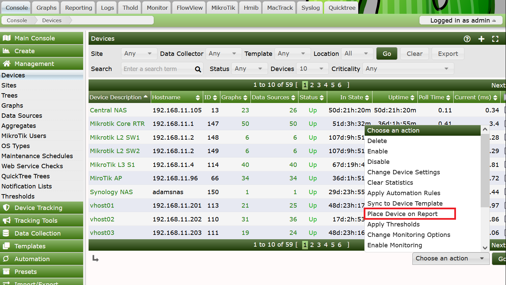
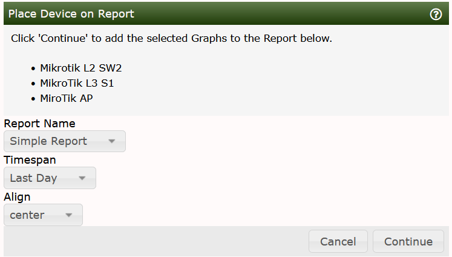

Not only can you add and remove Report Items from the Reports interface, but you can also add Graphs, Devices, and Trees to a Report from the Cacti Console under Graphs, Devices and Trees pages.
For each Management section, you will find a drop-down that looks similar to the Drop down below. Note that from this interface, you will not be able to add any object type more than once. If you need to add a Device more than once to more precisely choose filtering attributes, you will have to perform that from the Reports interface itself.
We have future plans to add an icon to the right of the Graph on the Graph Tree and Preview pages.

Regardless of the page type, when you select this option, upon clicking the Go button you will be presented with the following page.

From there, select your destination Report, Timespan, and Alignment.
Copyright (c) 2004-2024 The Cacti Group